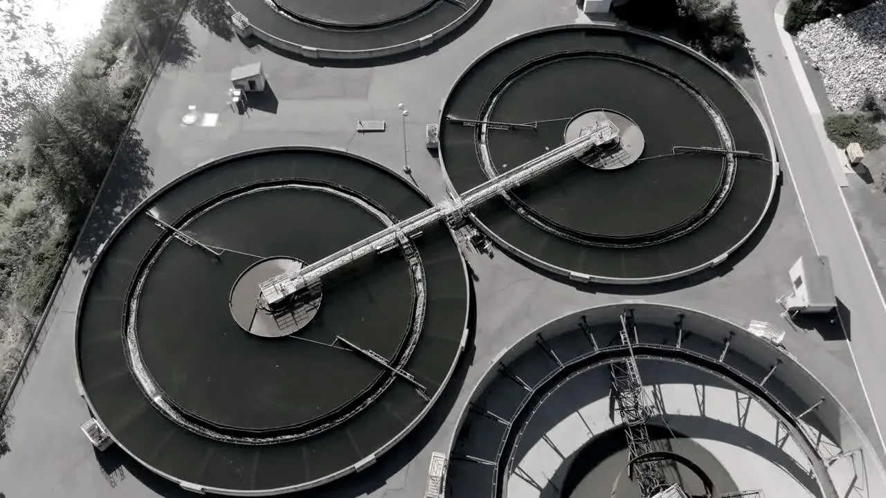

Philosophy
Nothing scales until it stops failing.
The industry can already grow protein in a warehouse and clean water in a tank. What it cannot do reliably is keep those systems alive on a bad night. That single fact decides how much of the world's food and water gets produced this way, and it is the problem we work on.

Controlled environment agriculture · a closed loop with a city attached
The shape of it
The next century of food is grown in boxes.
Open systems are running out of room. Agriculture already takes about 72 percent of freshwater withdrawals in many regions, and renewable water per person fell 7 percent in a single decade. Aquaculture passed wild capture as the larger source of aquatic animals, and simply holding today's seafood consumption to 2050 needs 36 million tonnes more than the world produces now. Meanwhile 13 percent of what is grown is lost before it reaches a shelf, and another 19 percent is thrown away after it.
The answer the industry has converged on is the closed system: recirculating aquaculture, controlled environment agriculture, precision fermentation, water reuse. Build a boundary, hold the chemistry inside it, and the resource arithmetic changes completely. A recirculating farm runs on 90 to 99 percent less water than other forms of aquaculture, exchanging under one percent of its volume a day, and it can sit next to the city that eats the fish rather than on a coastline a continent away.
None of that is speculative. The engineering exists and operators are running it today. The constraint is somewhere else.
of freshwater withdrawals go to agriculture in many regions, while renewable water per person fell 7 percent in a decade.
FAO AQUASTAT · 2025
of additional aquatic animal food needed by 2050 simply to hold today's per-person consumption steady.
FAO SOFIA · 2024
of food lost after harvest before it reaches a shelf, then wasted in shops and homes.
FAO 2022 · UNEP Food Waste Index 2024
people in the United States living on a low income and more than a mile from a supermarket, or ten miles in a rural county.
USDA Economic Research Service · 2017
What we believe
Four things, in the order they matter.
Derisking is the unlock, not yield.
Capital does not avoid land-based aquaculture and controlled agriculture because the biology fails. It avoids them because one bad night erases a year. A land-based farm lost about 1.2 million dollars of stock in a single night when circulation stopped and oxygen fell in two tanks. Another lost roughly 5 million when a single carbon dioxide filter failed. Neither was a science problem.
Insurers price what they cannot predict, and they price it high. Lenders discount a facility by the size of its worst plausible week. Every hour of genuine warning moves both of those numbers, and the numbers decide how many facilities get built at all. That is the leverage: not a few percent more yield, but a different cost of capital for an entire class of infrastructure.
Food should be grown where the people are.
A closed system does not need a coastline, a river or the right latitude. It needs power, water it mostly reuses, and someone who can keep it stable. That is why the idea of growing protein and produce beside the cities that eat them keeps returning, and why it keeps stalling at the operating-risk step rather than the siting step.
About 39.5 million people in the United States live on a low income and more than a mile from a supermarket, or ten miles of one in a rural county. At that distance the journey starts shaping the diet. Shortening the chain needs production that can be sited anywhere, and production that can be sited anywhere has to be production that does not fail unpredictably.
Waste is what you spend to cover a state you cannot see.
Aeration accounts for 50 to 90 percent of plant electricity in conventional activated sludge, and it is set conservatively because nobody measures nitrifier state. The same logic runs everywhere in this industry. Feed goes in above requirement, oxygen above demand, heat and light above need, because the operator is buying margin against something they cannot observe.
That margin is not stupidity. It is the correct response to uncertainty. The way to shrink it is not to exhort operators to be braver, it is to remove the uncertainty. Estimate the state honestly, publish the error bar, and the safety factor can come down without anyone taking a gamble.
A sealed habitat is the same problem with the tolerances removed.
A farm can flush a tank. A wastewater plant can bypass a reactor. A habitat with no resupply and no exit can do neither, which makes it the honest version of the problem we are already solving. If an estimator can hold the state of a closed life support loop, holding the state of a fish farm is the easy case.
We work toward life support because it forces a discipline that everything below it benefits from, and because the same building blocks are what a habitat will eventually need. From the mud to the moon is a sequence, not a slogan.
How we hold ourselves to it
A forecast is only worth what its record is worth.
An operator who acts on a number we produced is taking a real risk on our behalf. Everything below exists so that they can check us instead of trusting us, and so that the checking is cheap.
- We publish the misses. Every evaluation reports where the engine would have been wrong on that operator's own history, alongside where it would have been right.
- Every number resolves to a source. Each figure we publish names the benchmark, paper or operating record it came from, and the run counts behind it.
- Read-only by design. The engine estimates and forecasts. It connects to no control loop and changes nothing in a plant, which is why an evaluation costs an operator nothing but an export.
- Reproducible against public benchmarks. BSM1, ADM1, dynamic flux balance and SIMOC are the reference models these fields already use. Anyone can run them and check us.
- The operator owns the data. Evaluation files are deleted afterwards, and nothing becomes anyone else's training set without an agreement that says so.
What we do about it
Give the operator hours instead of an alarm.
A gauge reports a consequence. By the time it crosses a limit, the biological reserve that would have let someone act is already spent. We read the state behind the gauge from the sensors a facility already has, then simulate that state forward under the plan the operator intends to follow.
That is the entire product. It installs no hardware, changes no control loop, and asks the operator to trust nothing on faith: the same method that produces the forecast produces a record of when it would have been wrong.
The model is the product
The filter is commodity mathematics. What is hard, and what compounds, is writing the biology of a specific system down correctly.
An estimate without an error bar is a guess
Every state we report carries its uncertainty, and every forecast carries the probability attached to it. A number with no band is not a measurement.
A forecast is not an alarm
An alarm tells you a line was crossed. A forecast tells you what is about to happen, when, and how confident the engine is that it will.
It has to run on the sensors you have
If the answer needs new instrumentation, the model was not doing the work. Everything we report is recovered from readings a facility already takes.
Sources
- S1FAO, 2025 AQUASTAT Water Data Snapshot. Agriculture accounts for about 72 percent of withdrawals in many regions; renewable freshwater per person fell 7 percent over a decade. fao.org
- S2FAO, The State of World Fisheries and Aquaculture 2024. Aquaculture production reached 130.9 million tonnes in 2022, surpassing capture fisheries for aquatic animals. Holding 2022 consumption to 2050 requires 36 million tonnes more, a rise of 22 percent. fao.org
- S3UNEP, Food Loss and Waste, citing FAO 2022 and the UNEP Food Waste Index Report 2024. 13 percent of food is lost after harvest before retail; 19 percent is wasted at retail and consumer level. unep.org
- S4USDA Economic Research Service, Food Access Research Atlas. Approximately 39.5 million people, 12.9 percent of the United States population, lived in low-income, low-access tracts as of the 2017 estimate. Low access is measured at one mile from a supermarket in urban tracts and ten miles in rural ones. ers.usda.gov
- S5Texas A&M AgriLife Extension, Water Usage in Recirculating Aquaculture and Aquaponic Systems. Recirculating systems use 90 to 99 percent less water than other aquaculture systems, with a target of under 1 percent daily exchange. tamu.edu
- S6Drewnowski et al., Processes 7(5):311, 2019, and the University of Michigan Center for Sustainable Systems US Wastewater Treatment Factsheet. Aeration accounts for 50 to 90 percent of plant electricity in conventional activated sludge. umich.edu
- S7Incident figures are as publicly reported: Proximar Seafood, June 2025 (The Fish Site / SalmonBusiness) and Sustainable Blue, November 2023 (WeAreAquaculture / CBC News). Both are cited as industry record. Neither operator is a customer of ours.
Evaluation
If the argument is right, the test is cheap.
Send a log you already keep. We run it blind against your own recorded incidents and report how much warning was available, event by event.
- No connection to any live system. No change to any control loop.
- No fee, and the file is deleted afterwards.
- You keep the full workings, including where we would have missed.

Validated against the reference models these fields use, and backtested on real commercial operating history. The engine is read-only by design: it estimates and forecasts, and changes nothing in your plant.